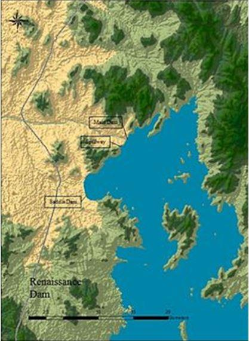
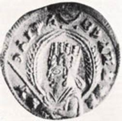
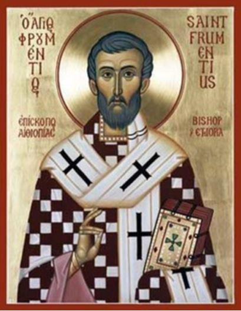
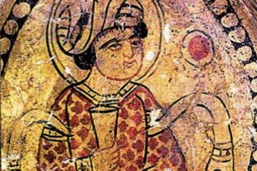
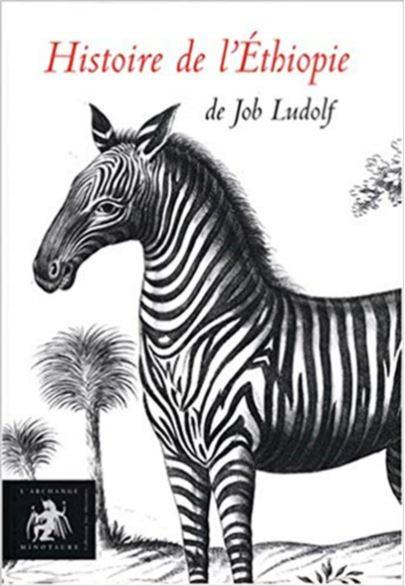
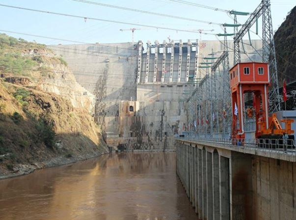

« Le grand barrage qui fait des vagues », tel était le titre de l’article paru en juin dernier (N° 1358) dans « LA LETTRE DE l’OCEAN INDIEN » qui nous informait du démarrage des travaux de détournement des eaux du Nil Bleu, fin mai, afin de préparer la construction du Grand Barrage de la Renaissance Ethiopienne. La réalisation de ce projet grandiose, cher au défunt premier ministre Meles Zenawifut repris à son compte par son successeur Halle Mariam Desalegn. Tous deux enclenchant un projet maintes fois annoncé par le passé, par les Négus qui se succédèrent sur le trône du fils de Salomon et de la reine de Saba.
Cette volonté éthiopienne visant une perspective d’indépendance énergétique est en voie d’être atteinte par la construction de ce futur barrage hydroélectrique d’une capacité de 6000 MW et d’un cout de 4,7 milliards de dollars. Il est important de souligner que cet ouvrage devrait réduire de 20 % l’eau disponible pour l’Égypte pendant le temps (de trois à cinq ans) nécessaire pour remplir l’immense réservoir (63 milliards de mètres cubes) de ce futur barrage.
Mais comme à chaque fois, dans l’histoire entre ces deux pays, que ce projet a été évoqué, il a été considéré comme une déclaration de guerre de la part des dirigeants de l’Égypte ou comme une réponse dissuasive à une agression à l’encontre de l’Éthiopie.
Cette fois encore, la réaction ne s’est pas fait attendre et a été violente. L’ancien président Morsi a certes publiquement écarté l’option militaire, pas facile à réaliser de toute manière contre l’Éthiopie, mais dans un débat, qu’il a présidé le 4 juin et qui a été retransmis à la télévision égyptienne en direct, il a évoqué la possibilité de faire intervenir les services secrets égyptiens pour faire détruire ce futur barrage, alors que d’autres leaders, en sa présence, évoquaient l’action de soutien aux organisations armées de l’opposition éthiopienne.
Enfin a été brandie l’éternelle menace de représailles envers la communauté chrétienne du Delta et du Haut Nil, à savoir, s’en prendre aux églises coptes essentiellement, à sa communauté et à l’université Al Azhar du Caire.
Les travaux du grand Barrage de la Renaissance ont démarré en mai 2013 et devraient s'achever l'année prochaine. (Crédits : Reuters)
Il n’est pas question dans ce magazine d’engager une polémique politique mais seulement d’avertir le lecteur que cette querelle « des eaux du Nil » est cyclique depuis huit siècles et que nous en trouvons les traces dans la littérature des deux pays concernés. Traces que nous allons vous livrer.
Avec cet hypothétique barrage, évoqué depuis le Moyen Age éthiopien, c’est toute la politique entre ces deux pays, l’Éthiopie et l’Égypte qui apparait dans les archives et au fil du temps.
 Pièce à l’effigie de l’empereur EzanaPour comprendre les arguments avancés par les deux protagonistes au cours des siècles, il nous faut revenir au temps de la mise en place des confessions chrétienne et musulmane dans ces grands pays.
C’est l’empereur du royaume d’Axum, dans le nord de l’Éthiopie actuelle, EZANA qui adopta le christianisme dans la troisième décennie du IVème siècle apr.J.C. Sa conversion se fit grâce à la présence à la cour de deux jeunes Romains chrétiens fort instruits, Aedesius et Frumentius, qui aidèrent la régente à gouverner jusqu’à la majorité du jeune Ezana.
Lors de l’accession au trône de celui-ci, les deux jeunes Romains quittèrent loyalement leur fonction et retournèrent dans l’empire romain. Mais Frumentius, en passant par Alexandrie, présenta la situation de l’empire à l’évêque Athanase et le pria de trouver d’urgence un homme digne d’être envoyé comme évêque vers les nombreux Chrétiens déjà regroupés et les églises déjà dressées en terre barbare. Athanase le désigna comme étant le plus qualifié, le consacra et le confia à la grâce de Dieu avant son retour au royaume d’Axum.
L’évêque Frumentius est donc le premier évêque (abouna) d’Éthiopie consacré par le patriarche d’Alexandrie. La tradition ecclésiastique éthiopienne le désigne du nom d’Abouna SelamaKesateBerhan. Cette tradition se pérénisa et voulait que les évêques d’Éthiopie soient originaires d’Égypte et consacrés par le patriarche d’Alexandrie, patriarche de ce qui allait devenir plus tard l’église copte d’Egypte.
Cette tradition très contraignante se perpétua jusqu’ au XXème siècle. C’est en effet le dernier empereur du trône d’Éthiopie, Hailé Sélassié, qui obtint en juillet 1959, non sans mal, et pour la première fois, de nommer un évêque éthiopien à la tête de l’église d’Abyssinie.
Cette tradition épiscopale rendait l’église d’Éthiopie et les Négus qui se succédèrent très dépendants des autorités ecclésiastiques et politiques d’Alexandrie et du Caire.
Revenons en arrière, plus exactement au tournant du VIIème siècle lorsque Mahomet commence à propager son message divin et se heurte pendant quelques années à une opposition féroce à la Mecque alors que l’empire d’Éthiopie d’Axum se distingue, dès les origines de l’Islam, par une tolérance religieuse qui n’est pas seulement une tactique politique mais qui s’appuie sur un sentiment moral de sympathie des Chrétiens éthiopiens envers cette partie de la population du centre de l’Arabie devenus monothéistes.( les Musulmans) A défaut d’une alliance politique avec Axum, recherchée au début de l’Hégire par Mahomet, le prophète profita de ce capital sympathie pour obtenir vers 615 de l’ère chrétienne, la protection de son neveu Othmân et d’une douzaine de ses compagnons. Mahomet aurait également prié l’empereur Giân-Asfat de recevoir ses parents qui, disent les Traditions, auraient dès lors été autorisés à s’établir dans le Harar. Un peu plus tard une seconde émigration amena en Abyssinie une centaine d’autres fidèles du Prophète. Les Qoreïchites, adversaires de ces fugitifs, se virent refuser leur extradition malgré les précieux présents adressés à l’empereur Ja’far. L’Empereur répondit aux envoyés qoreïchites de la Mecque : « Vais-je chasser des gens qui sont sous ma protection et qui sont dans la vérité alors que vous êtes dans le néant ? » Plus tard encore, un troisième groupe de sectateurs de l’Islam se serait abrité en Éthiopie de la colère de ses concitoyens.
Ainsi donc aux premières heures de l’Islam, les Musulmans ne faisaient pas figure d’ennemis pour les Chrétiens éthiopiens mais bien au contraire bénéficiaient d’une grande tolérance et Mahomet aurait, au sujet de la conduite à tenir face à eux, émit cette recommandation : « Tant que les Abyssins ne prennent point l’offensive, laissez-les en paix ! »
Les premières décennies après l’Hégire, se caractérisent par le règne de l’harmonie, de la tolérance et de la sagesse entre le monde musulman et celui des chrétiens d’Éthiopie. Mais par la suite et au cours des siècles qui suivirent, les relations se dégradèrent et s’envenimèrent. Chaque communauté défendant ses intérêts économiques. Aux routes maritimes de la mer Rouge longtemps aux mains des Axumites succédèrent les pistes caravanières de la péninsule arabique sous l’autorité des Arabes. Des problèmes politiques nouveaux apparurent ensuite avec les croisades chrétiennes en vue de « libérer les lieux saints » à Jérusalem où résidait une communauté éthiopienne. Des alliances se nouèrent entre le plateau abyssin (mythique royaume du prêtre jean) et les royaumes chrétiens afin de prendre les Mahométans à revers.
La marge de manœuvre des Chrétiens et des Musulmans était mince. En effet, les uns et les autres avaient leurs minorités qui, trop souvent, en période de tension, servaient d’otages. Les Coptes du Caire et d’Alexandrie d’un côté, les musulmans en Abyssinie de l’autre. Aussi la crainte de voir ses coreligionnaires respectifs maltraités retenait-elle chaque gouvernement sur la pente glissante des représailles. En supplantant les Byzantins en Égypte, les Arabes et leurs sultans successifs furent obligés de tenir compte de cette minorité chrétienne, non seulement pour la bonne marche des affaires, car les Coptes étaient particulièrement compétents pour l’administration et le commerce, mais aussi pour sa politique extérieure comme moyen de pression.
La méfiance s’établit de part et d’autre s’accompagnant de brimades et parfois d’acmés. Ainsi la persécution d’Al-Hakim en 1005-1012, pendant laquelle tous les Coptes furent chassés d’Égypte, ou encore le refus du négus de laisser les Musulmans construire des mosquées en son royaume. A ces vexations du Caire : persécution des Coptes, refus de laisser la métropolie d’Alexandrie désigner et consacrer le nouvel Abouna d’Éthiopie, l’empereur répondait invariablement par la même menace : Le détournement des eaux du Nil qui ruinerait l’économie et affamerait le peuple égyptien.
C’est ce que fit en 1325, l’empereur régnant sur l’Abyssinie, AMDA SYÔN. Apprenant que le Sultan du Caire AL-NÂSIR B. GALÂWÛN persécutait les Coptes de la vallée du Nil et remettait en vigueur les humiliations du sinistre Al-Hâkim, il lui écrivit une lettre dans laquelle il le sommait de reconstruire les églises détruites par les Musulmans, le menaçant de détruire toutes les mosquées de ses empires et de faire intercepter le cours du Nil.
Mais d’où vient cette idée de dérouter les eaux du Nil et de s’en servir comme moyen de pression politique alors que la connaissance par les Européens des sources du Nil attribué à James Bruce date du XVIIIème siècle ? James Bruce en effet publia son ouvrage relatant son voyage en 1790, ouvrage qui toucha un large public. La vérité m’amène ici à signaler aux lecteurs que c’est un jésuite portugais, le père Pedro Paez, le premier Européen à avoir vu les sources du Nil le 21 avril 1618 alors qu’il accompagnait le négus Susnessos en campagne militaire.
Le récit de voyage du père portugais fut publié 1678 par Kircher.
Elle vient de loin cette idée de détournement.
Déjà en 1681, un orientaliste allemand Job Ludolf, publie un ouvrage sur L’Éthiopie qui ne va pas tarder à devenir fondamental. Pour écrire son ouvrage, Ludolf s’est appuyé sur la quasi-totalité des publications connues à son époque et il a réussi à rassembler une information très importante sur l’Éthiopie. N’étant pourtant jamais allé lui-même en Éthiopie, son ouvrage en quatre volumes constitue avant l’heure une véritable encyclopédie sur l’Éthiopie. Il a heureusement été grandement aidé par AbbaGorgorios, un prêtre éthiopien catholique venu à Rome où ils travaillèrent ensemble à l’élaboration de cet ouvrage.
Les renseignements de première main fournis, soit par écrit, soit oralement, par Gorgorios furent ensuite comparés aux textes laissés par les jésuites portugais et espagnols, venus en Éthiopie aux XVI et XVIIème siècles. En particulier les écrits du père Paes et leurs relectures en 1626 par le père Manuel de Ameida résidant à Gorgora en Ethiopie, au nord du lac Tana. Cette résidence des pères jésuites, si importante dans l’histoire de l’Éthiopie et dont ne subsistaient que quelques pans de murs, est actuellement en cour de restauration. Citons également les écrits et travaux des pères Tellez et Jérôme Lobo, compilations complétées plus tard par le père Nicolas Godinho résident à Rome et censeur des livres écrits par les pères jésuites portugais de la deuxième partie du XVIème siècle.
Mais Ludolf n’en reste pas là. Il fait appel aussi à de nombreux savants et scientifiques de son époque ou de périodes bien antérieures (Pline l’ancien, Solin, le géographe nubien, al-Makin, Marco Polo et bien d’autres comme l’histoire de Nonnosus, en ambassade pour l’empereur Justinien chez les Ethiopiens vers 550. Il ne semble pas connaitre par contre l’existence à la bibliothèque vaticane du Périple de la mer érythréenne ni le voyage de Comas Indicopleustès au VIème siècle qui effectua plusieurs périples en Mer Rouge.
Si Ludolf et Gorgorios lisent tout ce qui est écrit sur l’Éthiopie et comparent les textes avec d’autres documents, ils font surtout des commentaires pertinents en s’aidant des connaissances de leur époque. Ainsi dans le livre I au chapitre VIII consacré aux fleuves d’Abyssinie, en particulier, le Nil, ses sources et son cours Ludolf rapporte l’information du père PeroPaes, sur les sources du Nil et y donne également une description détaillée de ces sources, du cours supérieur du Nil, des régions traversées, et des crues du Nil si importantes pour l’Égypte.
Puis ils en viennent dans leurs commentaires à aborder dans cet ouvrage une question encore importante à l’époque et qui est l’objet de notre propos ce jour : le roi des Abyssins peut-il empêcher le Nil de couler en Égypte ? Ils ont pu le lire maintes fois. C’est du moins en effet ce que prétendent dès le XIème siècle les auteurs anciens comme nous le rapporte au XIIIème siècle l’arabe al-Makin : En 1089 environ, le Nil fit gravement défaut et le prince musulman d’Égypte envoya le patriarche Michaël dans le pays abyssin avec des présents et beaucoup d’objets précieux. L’ambassade fut somptueusement reçue et expliqua les malheurs occasionnés à son pays et à ses habitants par la baisse des eaux du Nil. Le roi abyssin accueillit favorablement cette requête et ordonna que « soit ouvert le lit qui était bouché » En une seule nuit les trois bras du Nil grossirent et l’eau coula vers les plaines d’Égypte qui furent cette année-là irriguées et fertilisées grâce à l’intermédiaire du Patriarche et la bonté du roi Abyssin.
Certains en outre pensent, en s’aidant des cartes de géographie de l’époque, qu’il est facile grâce à des travaux de faire en sorte que le Nil soit dévié jusque dans la mer Rouge.
Cette légende traverse les temps sous des formes variées. Elle est admise sans discussion et compilée par les scribes, les sages, les moines de génération en génération. Personne ne se demande comment fut obstrué le Nil, ses bras ou ses affluents. Le phénomène résulte-il de la volonté du Négus qui fit faire de grands travaux, ou le fleuve s’est-il encombré de lui-même, d’arbres et de pierres, dans des endroits étroits. Au XVIème siècle, le vice-roi portugais des Indes Albuquerque reprendra cette idée. Aussi invraisemblable que cela puisse nous sembler, l’idée en était bien répandue et cela donc, dès le XIème siècle.
Le père Kircher, un spécialiste au XVIIème siècle des questions relatives au Nil, reprend l’histoire de l’ambassade du patriarche pour prétendre que les Ethiopiens « avaient détourné le Nil puis l’avait rétabli dans son lit ». Voilà un geste politique plus fort, il ne s’agit plus de supposer un encombrement naturel mais bien d’un geste délibéré auquel l’AbbaGorgorios, conseillé de Ludolf, apporte sa caution en précisant que non loin de là où se trouvent les chutes du Nil, tout le sol est en pente vers l’est ; et s’il n’y avait pas de montagne faisant obstacle, le Nil coulerait vers l’est. Donc une fois cette montagne percée, grâce à un travail qui n’est pas si difficile, tout le fleuve peut être dévié et détourné vers la mer Rouge. Cela ne semblait pas impossible aux yeux des sages de l’époque car l’Antiquité donnait de multiples exemples de fleuves détournés. Chez Hérodote on peut lire que la reine Nitocris de Babylone fit changer le cours de l’Euphrate et Cyrus, roi de Perse celui du fleuve Gyndès.
À partir de la fin du XVIIème siècle la légende du détournement des eaux du Nil se perdit dans les sables. Il fallut attendre le XIXème siècle, 1875 exactement, pour retrouver dans la littérature la mention d’une confrontation entre l’Égypte et l’Éthiopie à cause d’une controverse relative au Nil puis à l’époque du régent Tafari, en 1920, on entendit à nouveau parler des eaux du Nil. Le régent restera sourd à une proposition de la Grande-Bretagne (alors maîtresse de l’Égypte) qui souhaitait obtenir son accord pour la construction d’un barrage au lac Tana qui régulariserait la cour du Nil Bleu en territoire soudanais. En négociant sur ce sujet avec les Anglais il réussit à assouplir leur position sur l’adhésion de l’Éthiopie à la S.D.N. La crise de 1929 rendit caduque ce projet anglais qui témoigne de l’importance primordiale qu’on accordait encore à cette réalisation. Enfin, citons également pour mémoire les menaces de représailles proférées en 1978 par le président SADATE à son homologue le général MENGISTU s’il se mettait en tête de retenir une partie des eaux du Nil.
Aujourd’hui donc, le sujet ressort des cartons et des livres d’histoire et suscite toujours autant de passion, d’angoisse et de crainte de représailles de part et d’autres chez les protagonistes. La question n’est pas nouvelle pour la région, elle a déjà fait verser beaucoup d’encre et de sang et le temps qui coule va-t-il à la fois changer le cours du Nil et de l’Histoire ?
L’Égypte ne va-t-elle voir dans la construction de ce barrage que la mise à exécution d’une menace centenaire ?, sans tenir compte du contexte contemporain qui lui est énergivore. Pourtant cette préoccupation qui était la sienne avant la réalisation du barrage Nasser sur le Nil au niveau d’Assouan, l’Éthiopie la reprend aujourd’hui à son compte, ne visant que son indépendance énergétique et le développement de son industrie. Mais il se peut que la prophétie d’un ancien ne hante l’esprit des descendants de Pharaon : « Qui tient le Nil, tient l’Égypte ».
P.G.
Bibliographie sommaire :
BERHANOU, Abebe.1998. Histoire de l’Ethiopie. Paris, Maisonneuve et Larose.
CUOQ, Joseph.1981. L’islam en Ethiopie des origines au XVIème siècle. Paris, Nouvelles Editions Latines.
DE JUNIAC, Gontran. 1979. Le dernier roi des rois. Paris, Plon.
DORESSE, Jean.1957. L’empire du Prêtre Jean. Paris, Plon.
DORESSE, Jean.1971. Histoire sommaire de la Corne de l’Afrique. Paris, Geutner.
HENZE, Paul B .2004. Histoire de l’Ethiopie. L’œuvre du temps. Paris, Moulin du pont.
JOINT DAGUENET, Roger. 1995. Histoire de la Mer Rouge. Tome 1. Paris, Perrin.
La lettre de l’Océan Indien, N° 1358/ juin 2013.
LUDOLF, Job. 2008. Histoire de l’Ethiopie. Tome 1 .Apt, Archange Minotaure.
Partager cette page